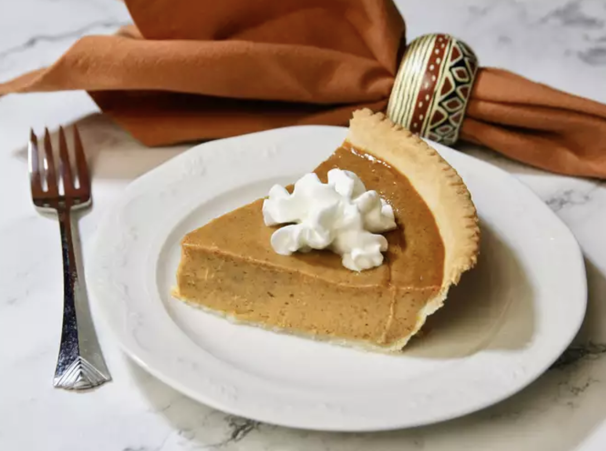

Perfect Pumpkin Pie
Description:
The one and only pumpkin pie! The perfect ending to a Thanksgiving feast. Garnish as desired. Refrigerate leftovers.
Ingredients:
- 1 (15 ounce) can pumpkin puree
- 1 (14 ounce) can EAGLE BRAND® Sweetened Condensed Milk
- 2 large eggs/li>
- 1 teaspoon ground cinnamon
- 1/2 teaspoon ground ginger
- 1/2 teaspoon ground nutmeg
- 1/2 teaspoon salt
- 1 (9 inch) unbaked pie crust
Steps:
- Preheat the oven to 425 degrees F (220 degrees C).
- Whisk pumpkin puree, condensed milk, eggs, cinnamon, ginger, nutmeg, and salt together in a medium bowl until smooth.
- Pour into crust.
- Bake in the preheated oven for 15 minutes.
- Reduce oven temperature to 350 degrees F (175 degrees C) and continue baking until a knife inserted 1 inch from the crust comes out clean, 35 to 40 minutes.
- Let cool before serving.